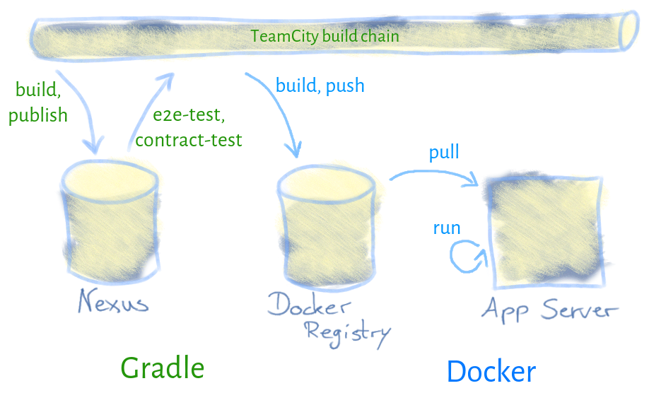
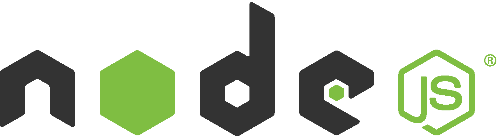
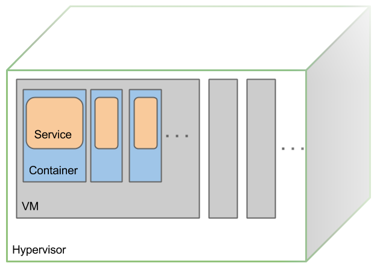

Continuous Deployment mit Gradle und Docker
von
Tobias Gesellchen
@
Hypoport AG
Continuous Deployment mit Gradle und Docker
von Tobias Gesellchen
Wer?
Tobias Gesellchen
Softwareentwickler (Java, JavaScript, …)
bei:
Hypoport AG
Kontakt:
@gesellix
Blog:
gesellix.net
Was?
Überblick
Build und Orchestrierung mit Gradle
Docker als Schnittstelle für DevOps
Beispiel-Projekt
Spring Boot Webapps:
AngularJS-Frontend
Groovy-Backend
Blue-Green-Deployment hinter einem HAProxy
CouchDB
Logstash (ELK-Stack)
Build und Orchestrierung mit Gradle
Deployment Pipeline

Gradle Power

Spring Boot
Ach ja:
inkl.
Gradle als Dirigent
Build und Publish einer JVM-/JS-Applikation
e2e-Tests per Protractor
Contract-Tests
Deployments mit Docker
Toggle Blue↔Green
DevOps mit Docker
Verantwortungsverteilung

Operator als Enabler
Infrastruktur: Ops
Container, Applikation/DB: Dev
VMs (Provisioning), Docker: Dev+Ops
Monitoring, Support: Dev+Ops
Docker
Linux Container, keine VM
Remote API (unter alternativen Betriebssystemen: boot2docker)
Image-Layer ermöglichen Caching
Mehrere Container desselben Images auf einem Host möglich
Warum Docker?
Developer müssen lernen→Operations wird entlastet
Remote API→kein SSH notwendig
Host kann generisch bleiben
Flexibel: Runtime-Environment, Build-Environment, …
Fragen?
Slides:
http://gesellix.github.io/conli2014/
Hypoport IT blog
gesellix/pipeline-with-gradle-and-docker
@gesellix
gesellix.net
Danke!